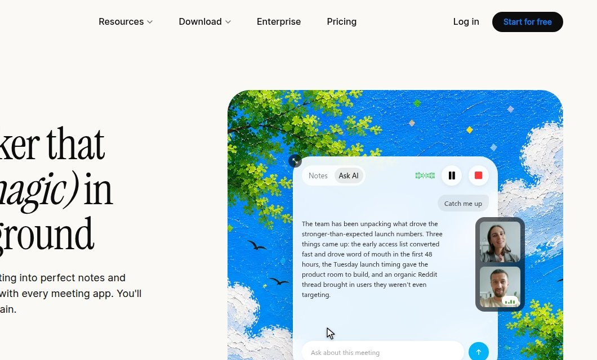
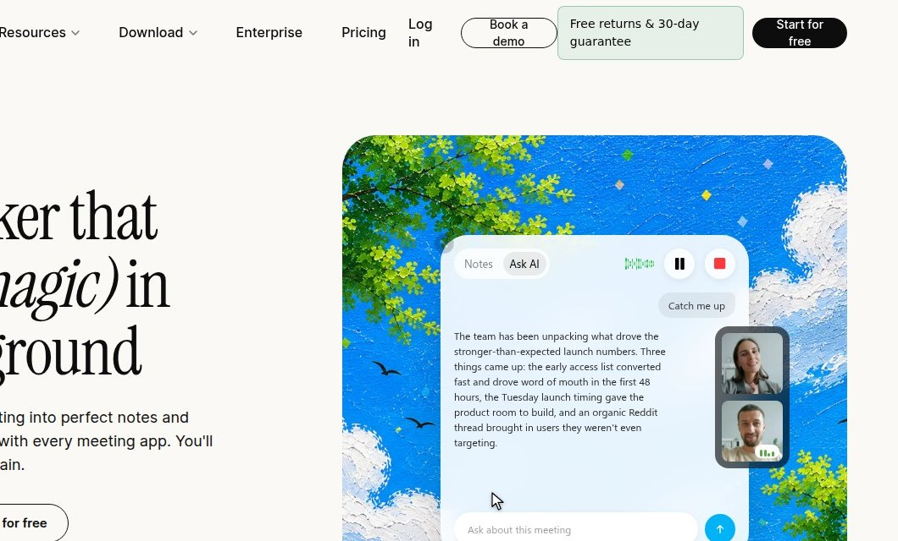
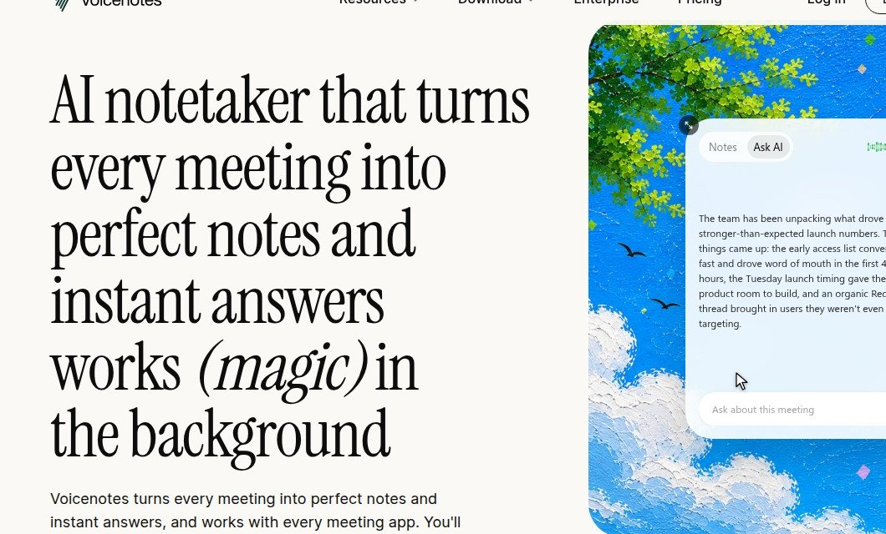
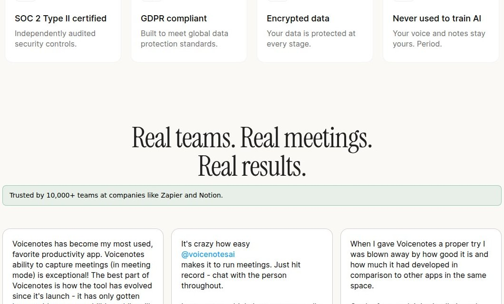
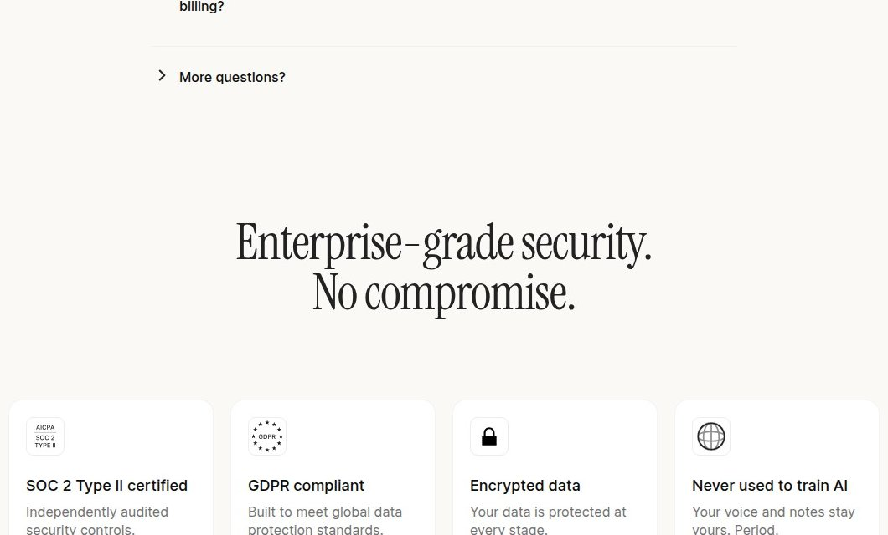
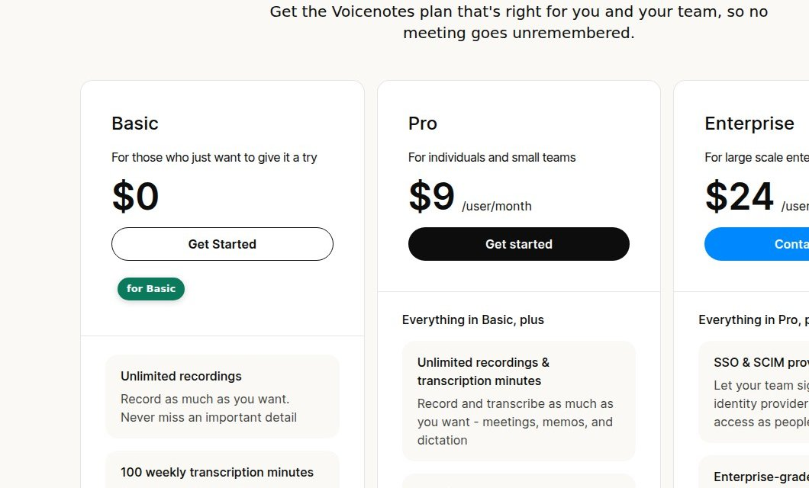

Competing CTAs dilute primary action
The homepage presents four competing CTAs, diluting the primary signup action and creating ambiguity in the first step of the funnel.


Missing trust signals above the fold
The homepage shows no sign of returns policy, guarantee, so a first-time visitor has nothing to offset purchase risk.


Hero lacks concrete outcome
The homepage headline names the product but uses vague parenthetical language, failing to explain the concrete benefit.


Proof headline lacks evidence
The social-proof headline promises results but no customer quotes, company names, or outcome data exist to support it.


Security claim without proof
The enterprise-grade security claim is repeated without any supporting evidence, undermining trust at the pricing decision point.

CTA clutter and unclear plan mapping
The pricing page presents multiple similar CTAs without clear association to tiers, confusing the next step after plan selection.